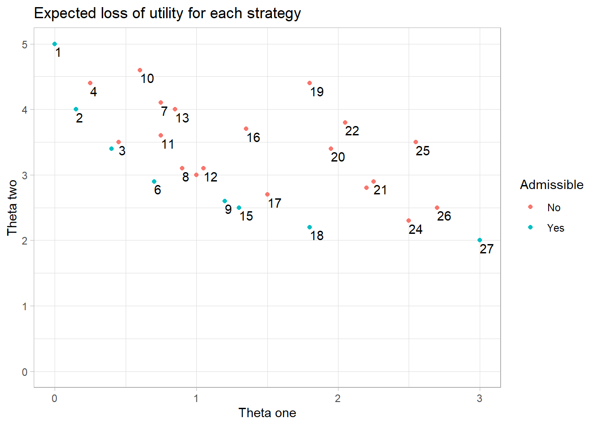

suppressPackageStartupMessages(library(ggplot2))
suppressPackageStartupMessages(library(tidyverse))677_Notes_Quarto
The following are notes for Chapter 5 of Elementary Decision Making, titled “Uncertainty due to Ignorance of the State of Nature”.
Libraries
Expected loss is a key concept in decision theory, used to quantify some amount of utility that is lost as a result of a certain action. Chapter 5 of Chernoff & Moses touches on this concept of expected loss of utility \(L(\theta,s)\).
Data
To find the expected losses of strategies featured in the main example in the chapter, some of the tables need to be created.
Table 5.1
Following page 120, the following variables/conditions exist:
States of nature: \(\theta_1\) = “Today is a sunny day.” \(\theta_2\) = “Today is a rainy day.”
Available actions: \(\alpha_1\) = “Wear fair-weather outfit.” \(\alpha_2\) = “Wear outfit with raincoat.” \(\alpha_3\) = “Wear outfit with raincoat, boots, rain hat, and umbrella.”
Table 5.1
| \(\alpha_1\) | \(\alpha_2\) | \(\alpha_3\) | |
|---|---|---|---|
| \(\theta_1\) (no rain) | 0 | 1 | 3 |
| \(\theta_2\) (rain) | 5 | 3 | 2 |
Tables
The following code creates additional tables featured in the chapter.
Chapter Tables
## Mr. Nelson's Loss of Utility l(sigma,alpha) from (pg. 120,table 5.1)
sigma_one <- c(0,1,3)
sigma_two <- c(5,3,2)
Loss_table <- as.data.frame(t(data.frame(sigma_one,sigma_two))) |>
rename(a1 = V1, a2 = V2, a3 = V3)
## Weather indication probabilities Table (p121 table 5.2)
sigma_one <- c(0.6,0.25,0.15)
sigma_two <- c(0.2,0.3,0.5)
Weather_table <- as.data.frame(t(data.frame(sigma_one,sigma_two))) |>
rename(State_1 = V1, State_2 = V2, State_3 = V3)
## Strategy Table (p121 table 5.3)
Strategy <- as.character(1:27)
x_1 <- c(rep("a1",9),rep("a2",9),rep("a3",9))
x_2 <- rep(c(rep("a1",3), rep("a2",3),rep("a3",3)),3)
x_3 <- rep(c("a1","a2","a3"),9)
Strategy_Table <- data.frame(Strategy,x_1,x_2,x_3)
remove(sigma_one,sigma_two,x_1,x_2,x_3,Strategy)
Loss_table a1 a2 a3
sigma_one 0 1 3
sigma_two 5 3 2Weather_table State_1 State_2 State_3
sigma_one 0.6 0.25 0.15
sigma_two 0.2 0.30 0.50Strategy_Table Strategy x_1 x_2 x_3
1 1 a1 a1 a1
2 2 a1 a1 a2
3 3 a1 a1 a3
4 4 a1 a2 a1
5 5 a1 a2 a2
6 6 a1 a2 a3
7 7 a1 a3 a1
8 8 a1 a3 a2
9 9 a1 a3 a3
10 10 a2 a1 a1
11 11 a2 a1 a2
12 12 a2 a1 a3
13 13 a2 a2 a1
14 14 a2 a2 a2
15 15 a2 a2 a3
16 16 a2 a3 a1
17 17 a2 a3 a2
18 18 a2 a3 a3
19 19 a3 a1 a1
20 20 a3 a1 a2
21 21 a3 a1 a3
22 22 a3 a2 a1
23 23 a3 a2 a2
24 24 a3 a2 a3
25 25 a3 a3 a1
26 26 a3 a3 a2
27 27 a3 a3 a3Action tables, as featured in the chapter, were created in order to calculate expected values according to \(\theta_1\) and \(\theta_2\).
# dfs used to assemble action tables--------------------------------------
a1_count <- function(column){a <- str_count(column,"a1")}
a1_df <- as.data.frame(lapply(Strategy_Table[,2:4],a1_count))
a2_count <- function(column){b <- str_count(column,"a2")}
a2_df <- as.data.frame(lapply(Strategy_Table[,2:4],a2_count))
a3_count <- function(column){c <- str_count(column,"a3")}
a3_df <- as.data.frame(lapply(Strategy_Table[,2:4],a3_count))
# ------------------------------------------------------------------------
# setting up classes in order to do matrix multiplication
tw <- as.matrix(t(Weather_table))
a1_df <- as.matrix(a1_df)
a2_df <- as.matrix(a2_df)
a3_df <- as.matrix(a3_df)
# matrix multiplication
tA1 <- t(a1_df %*% tw)
tA2 <- t(a2_df %*% tw)
tA3 <- t(a3_df %*% tw)I then created a function to calculate the expected loss for any given strategy \(s_n\) for both possible states \(\theta_1\) and \(\theta_2\).
Expected Loss function
EL_calc <- function(strategy){ ### for any strategy 1-27, calculates the EL for sit. 1 and 2
Action_Probability_Table <- data.frame(p_action1 = tA1[,strategy],
p_action2 = tA2[,strategy],
p_action3 = tA3[,strategy])*Loss_table
Action_Probability_Table$EL <- rowSums(Action_Probability_Table)
EL <- Action_Probability_Table[,4]
EL
}This function takes the product of the loss of utility for each action \(\alpha\) for Mr. Nelson and the probability of each action given the state of nature \(P(\alpha | \theta)\) .
Loss of Utility table
# Table 5.4
Loss_of_Utility_Table <- as.data.frame(lapply(1:27, EL_calc))
rownames(Loss_of_Utility_Table) <- c("theta_one","theta_two")
colnames(Loss_of_Utility_Table) <- c(1:27)
### setting up table for plot
Loss_of_Utility_Table_Trans <- as.data.frame(t(Loss_of_Utility_Table)) |>
rename(EL_Theta_One=theta_one,EL_Theta_Two=theta_two) |>
mutate(StrategyNumber = 1:27)
row.names(Loss_of_Utility_Table_Trans) <- 1:27The chapter features a few plots and elaborates on Admissible strategies.
Plots
Admissible_Strategies <- Loss_of_Utility_Table_Trans[c(1,2,5,6,9,15,18,27),]
Loss_of_Utility_Table_Trans$Admissible <- as.factor(ifelse(Loss_of_Utility_Table_Trans$StrategyNumber %in% Admissible_Strategies$StrategyNumber,"Yes","No"))
Plot_Loss <- ggplot(Loss_of_Utility_Table_Trans,aes(EL_Theta_One,EL_Theta_Two))+
geom_point(aes(color=Admissible))+
xlim(0,NA)+
ylim(0,NA)+
labs(title = "Expected loss of utility for each strategy",
x = "Theta one",
y = "Theta two")+
geom_text(label=rownames(Loss_of_Utility_Table_Trans),
hjust = 0,
vjust = 1.3,
check_overlap = T)+
theme_light()
# help from https://r-graph-gallery.com/275-add-text-labels-with-ggplot2.html
Loss_of_Utility_Table 1 2 3 4 5 6 7 8 9 10 11 12 13 14 15 16
theta_one 0 0.15 0.45 0.25 0.4 0.7 0.75 0.9 1.2 0.6 0.75 1.05 0.85 1 1.3 1.35
theta_two 5 4.00 3.50 4.40 3.4 2.9 4.10 3.1 2.6 4.6 3.60 3.10 4.00 3 2.5 3.70
17 18 19 20 21 22 23 24 25 26 27
theta_one 1.5 1.8 1.8 1.95 2.25 2.05 2.2 2.5 2.55 2.7 3
theta_two 2.7 2.2 4.4 3.40 2.90 3.80 2.8 2.3 3.50 2.5 2Plot_Loss
As shown above, admissible strategies (colored blue) sit at the bottom edge of all of the strategies (designated by points on the graph). A strategy is inadmissible if another strategy offers a lower expected loss of utility for any possible state. For example, strategy 4 (top left) is inadmissible because in the event that state 1 or state 2 is the true state of nature, then strategy 2 would offer smaller expected losses of utility in either state. In this scenario, strategy 2 dominates strategy 4 since it is preferable in both states. Although strategy 2 offers a lower expected loss of utility than strategy 1 in the event of state 2 being the true state of nature, strategy 1 is expected to have a smaller loss of utility in the event that state 1 is the true state of nature. Since strategy 1 is not dominated by any other state, it is therefore admissible. I created an additional column in the dataframe of strategies that designates whether a strategy is admissible in order to distinguish it in the figure (blue = admissible).
Miller & Miller reference dominant strategies in Chapter 9 of John E. Freund’s mathematical statistics with applications, titled “Decision Theory”. In contrast to Chernoff, H., & Moses’ example of Mr.Nelson, their examples detail two players who each have their own strategy. Thus, instead of having a table of strategies \(s_1,s_2,...s_n\) by states \(\theta_1,\theta_2,...\theta_n\), the table resembles a strategy by strategy table, which has implications for optimal decison making.
knitr::include_graphics("C:/Users/Joe/Desktop/677 Found Stats/677 Final/677Notes/Expected Loss Shaded.png") #when clicking on image under files, open option that says "copy path" and paste into quotes
As noted in Figure 5.2 (pg. 126), the set of points, including the admissible ones, with that house all of the points representing strategies forms a convex set, holding all pure strategies. According to Chernoff and Moses (1959), a pure strategy “assigns an action to each of the possible observations”.
Below is an application of the expected loss function, which is used to give an answer for exercise 5.1.
“Compute the action probabilities and losses for strategy \(s_{10}\).”
#using function above
EL_calc(10)[1] 0.6 4.6strategy <- 10
#pasted from first part in function above
Action_Probability_Table <- data.frame(p_action1 = tA1[,strategy],
p_action2 = tA2[,strategy],
p_action3 = tA3[,strategy])*Loss_table
Action_Probability_Table p_action1 p_action2 p_action3
sigma_one 0 0.6 0
sigma_two 4 0.6 0Using the function created above, titled “EL_calc”, I am able to enter in a strategy from the table and have an output that represents the expected loss of utility for state 1 and state 2. Using these two values, I am able to perform matrix multiplication with the loss of utility table (pg. 120, table 5.1) to find the losses of strategy 10.
Given a different loss of utility table, probability of state table, and strategy table, one could modify the expected loss function created above to come up with solutions to other problems involving uncertainty due to nature.
Reference
\(1\) Chernoff, H., & Moses, L. E. (1959). Elementary decision theory. Chapter 5.
\(2\) Miller, J. (1999). John E. Freund’s mathematical statistics. Chapter 9.